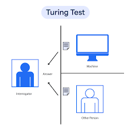

Turing Test in AI
- Turing test was introdused by Alan Turing in 1950
- Turing test is used to check wherher a machine can think like a human or not
- The Turing test requires three terminal, each of which is physically separated from the other two.
- One terminal is operated by a computer, while the other two are operated by humans.
- During the test, one of the humans functions as the questioner, while the second human and the computer function as respondents.
Example:
Interrogator: Are you a computer?
Player A(Computer): No
Player B(Human): No
Interrogator: Convert the decimal 45952 into binary.
Player A(Computer): Long pause and give the wrong answer.
Player B(Human):Long pause and give the wrong answer.

Summary
In this game, if an interrogator would not be able to identify which is a machine and which
is human, then the comuter passes the test successfully, and the machine is said to be
intelligent and can think like a human.